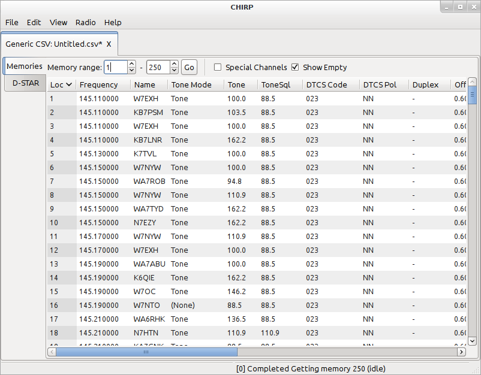
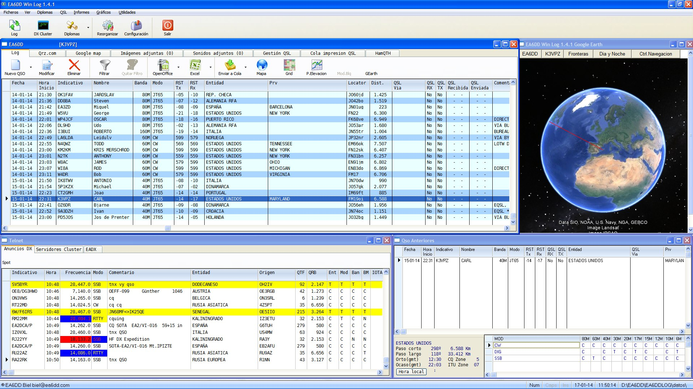

LU3PGA
SOFTWARE
Chirp

Con algunos sensores, una fuente de alimentación y la Raspberry Pi, puede crear una estación de monitoreo del clima afuera en su patio trasero.
Enlace
EA6DDlog

Este es un programa para el registro de contactos de radioaficionados. Forma parte de un proyecto global en el que pretendo desarrollar el mismo programa para diferentes sistemas operativos
Enlace